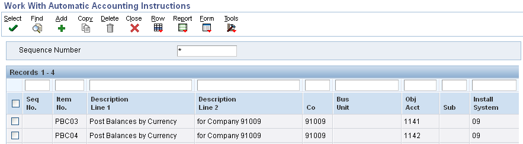
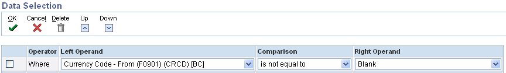

| Purpose |
| Overview |
| Example |
| Scope |
| Details |
| Program Functionality |
| Setup |
| Setting Up Monetary Accounts |
| Setting Up Exchange Rates |
| Post Account Balances by Currency |
| PBCxx AAI's |
| Unrealized Gains and Losses AAI's |
| Processing Options (R09415) |
| Data Selection (R09415) |
| Reviewing the Report |
| Frequently Asked Questions |
If you work with foreign currencies and monetary accounts, you need to periodically revalue your open invoices, open vouchers, and monetary accounts to reflect current exchange rates. Monetary accounts, which are typically bank accounts, are accounts that accept only transactions in a specific currency. Monetary accounts can be bank accounts as well as other accounts such as Accounts Receivable and Accounts Payable trade accounts. You assign a currency to the account master record using Work with Accounts application (P0901). This limits transactions to that specific currency.
The Monetary Account Valuation program also processes bank accounts with blank currency codes in the F0901 table if the accounts fall within the range for AAI item PBCxx. This AAI specifies account ranges for posting by currency. Unlike accounts that are assigned a specific currency, these accounts allow balances in multiple currencies.
You revalue your open invoices, open vouchers, and monetary accounts by calculating unrealized gains and losses. Typically, you will do this during your period-end processing. You can also revalue monetary accounts using Monetary Account Valuation program (R09415) that calculates the current domestic value of a foreign currency amount and creates journal entries for unrealized gains and losses. You can set a processing option in the Monetary Account Valuation program to create journal entries only for unrealized gains or only for unrealized loss or for both unrealized gains and losses.
Assume that the company is located in Great Britain and its base currency is British pounds (GBP). You have to pay several suppliers in Hong Kong dollars (HKD), so you establish a monetary bank account in HKD.
At the end of the month, you have 1,000,000.00 HKD in the bank account in Hong Kong. The account balance in the actual amounts (AA) ledger is 80,268.00 GBP. This account balance is based on the exchange rates of the individual transactions in the AA ledger. You must revalue the foreign bank account balance in the company currency using the exchange rate that is in effect at the end of the month, which is 1 HKD = 0.078996 GBP.
When you run the Monetary Account Valuation program, the system creates a reversing journal entry for an unrealized loss of 1,272.00 GBP. The account balance in the AA ledger is now 78,996.00 GBP. On the first day of the following month, the system reverses the journal entry and you can revalue the account again.
This document is intended for Finance Functional users who will be involved in the multicurrency processing in the General Accounting system.
Typically, you run the Monetary Account Valuation program (R09415) at the end of a fiscal period and calculate unrealized gains and losses prior to running financial statements. The program calculates the current domestic amount of the foreign currency balance to determine the unrealized gain or loss due to exchange rate fluctuations and creates corresponding journal entries with a JX document type for the unrealized gains and losses. The calculation shows what the gain or loss would be if you converted the balance of the foreign currency bank account to the domestic currency.
The Monetary Account Valuation program calculates unrealized gains and losses as follows:
The Monetary Account Valuation program (R09415) creates a journal entry to record the unrealized gains and losses with following attributes:
For most general ledger accounts, you want the system to accept transactions in any currency. This is accomplished by not assigning a currency code to the account. For those accounts in which you want to accept only transactions in a specific currency, you must assign a currency code to the account. These accounts are called monetary accounts. Monetary accounts are usually bank or cash accounts.
For example, a Japanese organization has a company with a currency that is Japanese yen, and that company has a bank account that is Canadian dollars (CAD). If you assign CAD as the currency of that account, it becomes a monetary account and the system accepts only transactions in that currency.
You use the Work with Accounts program (P0901) to set up your monetary accounts. The system stores currency codes for monetary accounts in the Account Master table (F0901).
*Assign a currency code to an account to designate it as a monetary account.
As part of working with multiple currencies, you need to ensure that the transactions that you enter are based on the most current exchange rates as quoted in the international financial market. The exchange rates:
You use the Work with Currency Exchange Rates program (P0015A) to set up and control the exchange rates for various currencies. The system stores exchange rates information in the Currency Exchange Rates table (F0015).
Exchange Rate between CAD and USD for August 2012

Exchange Rate between EUR and USD for August 2012

For more information on how to setup Exchange Rates, refer to Overview of Activating Currency in a Non-Currency Environment.
Post Balances by Currency (PBC) allows Account Balances (F0902) transactions to separate transaction amounts for the transaction currency in both the CA (foreign currency) and AA (actual amounts) ledgers. The Post Balances by Currency (PBC) feature will update the Currency Code - From (CRCD) field in the records of the Account Balances (F0902) table and balances will be stored by currency.
You activate the Post Balances by Currency feature in Company Setup program (P0010) under the Currency tab.

AAI item PBCxx defines the account ranges that the system uses to track and post balances by currency in the Account Balances table (F0902). If you post balances by currency for a company, you must set up AAI item PBCxx as well as select the Post Balance by Currency check box in the Company Names & Numbers program (P0010).

If the Account Balance By Currency Valuation report (R09415) processing options are set to create the unrealized gain/loss journal entry, the program uses the following AAIs to record Unrealized Gains and Losses on Monetary Bank Accounts:
where xxx is the currency of the company assigned to the monetary account.

LOD Tab
1. Account Level of Detail
Period Tab
1. Fiscal Year
2. Period Number
NOTE: If you leave any of the Fiscal Year and Period Number fields as blank, the system uses the current fiscal year and period defined in the Company Setup form (P0010) for the company of each account that is processed.
Print Tab
1. Account Number Format
2. Suppress Zero Balances
3. Suppress Zero Revalution Balances
Subledger Tab
1. Subledger
2. Subledger Type
NOTE:
As of Tab
1. As of
Journal Entries Tab
1. Gains/Losses
2. Reversing Entries
3. G/L Date
4. Approve Batches
Errors Tab
1. Print Errors
You should use the following data selection to perform monetary account revaluation on monetary accounts. This is also the default data selection associated with version R09415 | XJDE0001.

To include the non-monetary accounts which are set to post balances by currency, do not specify the above data selection. R09415 | XJDE0002 is used for non-monetary accounts for posting balances by currency.
Additionally, you can include Company or specific accounts for data selection in either of the above cases.

The Monetary Account Valuation program (R09415) prints a report that lists:
*1 As of Date - The As of Date printed on the R09415 report is the date that is used to retrieve the account balances from the F0902 table for the monetary accounts revaluation. This date is different from the Processing option As of Date which is used to fetch exchange rate for monetary account revaluation calculations.
*2 Level of Detail - You can set the level of detail in a processing option and use this report as a trial balance that displays both foreign and domestic amounts.
*3 Current Domestic Value of Foreign Amount = Foreign Ledger Balance (CA) / Divisor Exchange Rate OR Foreign Ledger Balance (CA) * Multiplier Exchange Rate.
In the example, for 91009.1110.CANADA,
Current Domestic Value of Foreign Amount = Foreign Ledger Balance (CA) / Divisor Exchange Rate
Current Domestic Value of Foreign Amount = 8500.00 / 1.0000100 = 8499.92
*4 Gains (+) / Losses (-) = Current Domestic Value of Foreign Amount - Domestic Ledger Balance (AA)
In the example, for 91009.1110.CANADA,
Gains (+) / Losses (-) = 8499.92 - 8323.87 = 176.05 (+)
*5 Note that if the report includes more than one currency, no total amount exists for the Foreign Ledger Balance column on the report since the amount would be meaningless because of the mixed currencies.
For Frequently Asked Questions, refer to Frequently Asked Questions on the Monetary Account Valuation Report (R09415) Frequently Asked Questions on the Monetary Account Valuation Report.